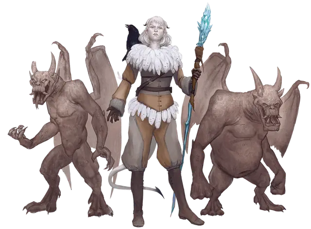

Алчность
Avarice
Средний Гуманоид (Тифлинг), нейтрально-злой, именной НИП

Класс Доспеха 13
Хиты 84 (13к8 + 26)
Скорость 30 футов
| мод | спас | ||
|---|---|---|---|
| СИЛ | 8 | −1 | −1 |
| ЛОВ | 16 | +3 | +3 |
| ТЕЛ | 14 | +2 | +2 |
| мод | спас | ||
|---|---|---|---|
| ИНТ | 17 | +3 | +6 |
| МДР | 10 | +0 | +3 |
| ХАР | 9 | −1 | −1 |
Навыки История +6, Магия +6
Сопротивление урону огонь, холод
Чувства тёмное зрение 60 футов, пассивное Восприятие 10
Языки Общий, Драконий, Инфернальный, Орочий, Язык Йети
Опасность 7 (2900 опыта)
Бонус мастерства +3
Особенности
Специальное снаряжение. Алчность владеет посохом мороза [staff of frost] с 10-ю зарядами. (см. раздел «Действия», ниже).
Ледяная погибель. Когда Алчность умирает, её труп замерзает на 9 дней, в течение которых его нельзя разморозить, повредить огнём, оживить и воскресить из мёртвых.
Использование заклинаний. Алчность является заклинателем 10-го уровня. Её базовой характеристикой является Интеллект (Сл спасброска от заклинания 14; +6 к попаданию атаками заклинаниями). У неё подготовлены следующие заклинаниями волшебника:
• Заговоры (неограниченно): волшебная рука [mage hand], малая иллюзия [minor illusion], огненный снаряд [fire bolt] (см. раздел «Действия» ниже), сообщение [message], фокусы [prestidigitation];
• 1-й уровень (4 ячейки): волшебная стрела [magic missile], доспехи мага [mage armor], обнаружение магии [detect magic];
• 2-й уровень (3 ячейки): открывание [knock], палящий луч [scorching ray], пылающий шар [flaming sphere];
• 3-й уровень (3 ячейки): контрзаклинание [counterspell], огненный шар [fireball], полёт [fly];
• 4-й уровень (3 ячейки): изгнание [banishment], огненный щит [fire shield];
• 5-й уровень (2 ячейки): длань Бигби [bigby’s hand], ментальная связь Рэри [rary’s telepathic bond].
Действия
Огненный снаряд (заговор). Дальнобойная атака заклинанием: +6 к попаданию, дистанция 120 фт., одна цель. Попадание: 11 (2к10) урона огнём.
Посох мороза. Держа этот посох, Алчность может потратить 1 или более его зарядов для наложения одного из следующих заклинаний (Сл спасброска от заклинаний 14): град [ice storm] (4 заряда), конус холода [cone of cold] (5 зарядов), ледяная стена [wall of ice] (4 заряда), туманное облако [fog cloud] (1 заряд).
Посох ежедневно восстанавливает 1к6 + 4 заряда на рассвете. Если вы истратили последний заряд, бросьте к20. Если выпадет «1», посох превращается в воду и уничтожается.
Реакции
Изгоняющее возмездие (перезаряжается после продолжительного отдыха). Когда Алчность получает урон от существа, которое она может видеть в пределах 60 футов, она может изгнать это существо на 1 минуту в находящуюся на другом плане ледяную тюрьму. Находясь там существо недееспособно и получает 5 (1к10) урона холодом в начале каждого своего хода. В конце каждого своего хода существо может совершить спасбросок Харизмы Сл 14 освобождаясь из тюрьмы и появляясь в том же самом месте, где оно находилось перед заключением, либо, если оно занято, в ближайшем свободном пространстве при успехе. Если существо погибает в ледяной ловушке, то оно остается в ней навсегда.
Описание
Алчность — жестокая и мстительная тифлинг, специализирующаяся в школе магии Воплощения. Ей нравится использовать свою магию для разрушения вещей, и ее жажда магических предметов не знает границ. Абсолютно уверенная в себе, она никогда не отступит перед посмевшим кинуть ей вызов, даже когда шансы явно складываются не в её пользу. В других волшебниках она видит только угрозу, и эта паранойя управляет её жизнью.
Она является членом Волшебного Братства почти два года. Алчность мечтает добиться славы и известности в рекордно короткие сроки и надеется, что разграбление затерянного города нетерильцев воплотит её фантазии в реальность.
Тифлинг пользуется тайной поддержкой архидьявола Левистуса, которому много лет назад она променяла свою душу в обмен на магические силы. Левистус приходит к ней во снах и направляет её в нужную ему сторону. Вскоре после того, как Алчность прибыла в Десять Городов, Левистус призвал ее найти «чёрный меч». Тифлинг не знала, кто или что такое «чёрный меч», пока к ней не подошли культисты Левистуса и показали похожие на меч осколки чардалина, которые они носят в виде кулонов на шее. Они назвались рыцарями
Чёрного Меча и предложили ей убежище в крепости Каэр-Диневал, где находится их база. Она не доверяет культистам, хотя они и относятся к ней с большим уважением, чем кто-либо другой, а крепость — намного более безопасное место, чем большинство других пристанищ в Десяти Городах.
Напарники. Алчность сопровождает пара верных ей горгулий [gargoyle] Горгл и Гургл, служащие ей телохранителями и разведчиками. Она использует заклинание ментальная связь Рэри [rary’s telepathic bond], чтобы поддерживать телепатический контакт со своими горгульями, прежде чем отправлять их на какое-либо задание. Алчность также пользуется поддержкой рыцарей Чёрного Меча, если ей нужно воспользоваться их умениями.
Фамильяр. На протяжении всего приключения фамильяром Алчности является противно каркающий ворон [raven] по кличке Скельм. Он использует блок статистики ворона [raven], за исключением того, что он является исчадием, а не зверем.
Книга заклинаний. Книга заклинаний Алчности выглядит как фолиант в белой кожаной обложке со страницами из пергамента. Личная печать Алчности выжжена на передней обложке. В книге содержатся все подготовленные Алчностью заклинания, плюс дополнительно следующие: волна грома [thunderwave], град [ice storm], конус холода [cone of cold], молния [lightning bolt], огненная стена [wall of fire], огненные ладони [burning hands], поиск фамильяра [find familiar], силовая стена [wall of force], трюк с веревкой [rope trick] и языки [tongues].